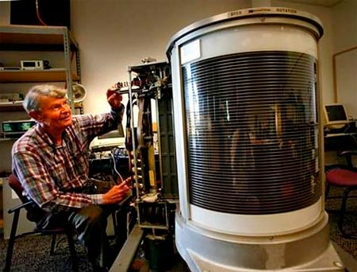

История жесткого диска
Первый в мире жесткий диск появился еще
за 15 лет до изобретения дискеты — в 1956
году. Прародителем современных HDD стало
детище корпорации IBM — модель 305 RAMAC,
название которой представляет собой
аббревиатуру от «Random Access Method
of Accounting and Control» («Метод
случайного доступа к учету и контролю»)

Эволюция жесткого диска